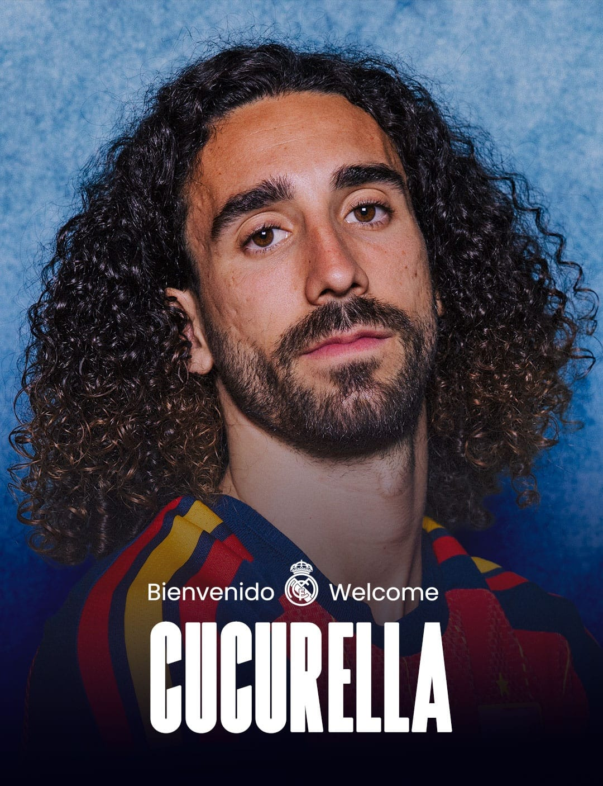

Cucurella anunciado no Real Madrid

Cucurella anunciado no Real Madrid
O lateral-esquerdo espanhol Marc Cucurella, foi anunciado no último domingo (14) pelo Real Madrid.
O Real Madrid anunciou a contratação do jogador de 27 anos, que estava no Chelsea, e está defendendo sua seleção na Copa do Mundo. Seu contrato é válido até 30 de junho de 2032.
O clube espanhol e o inglês, chegaram a um acordo de 55 milhões de euros pelo lateral.
O time disputava Cucurella com seu rival Atlético de Madrid, mas conseguiu fechar contrato no último fim de semana. Ele era um dos principais jogadores do Chelsea, e atual campeão da Copa do Mundo de Clubes, que foi disputado entre junho e julho de 2025. Quando acabar a campanha da Espanha na Copa do Mundo, o lateral irá se apresentar ao clube.
Esta contratação foi pedido do novo técnico recém-contratado José Mourinho, que foi anunciado na última quarta-feira (10) pelo gigante espanhol.
Feito por: @mahriios_